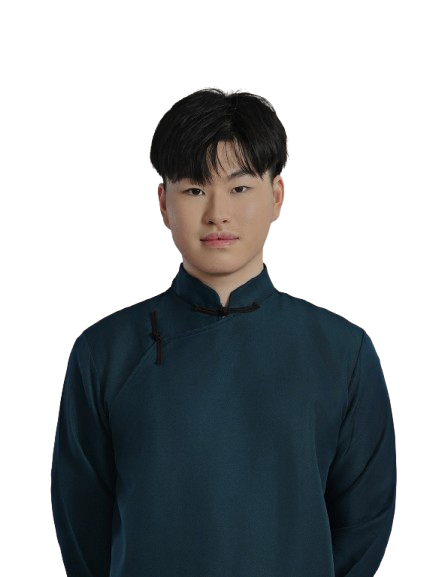

Frozen Policy Iteration for MDPs with Stochastic Transitions under Linear Qπ Realizability
IN PREP Manuscript in preparation
Theoretical machine learning & reinforcement learning
I'm a senior at the University of Illinois Urbana-Champaign studying computer science, mathematics, and statistics. I work on the theoretical foundations of machine learning, and I'm applying to CS PhD programs for fall 2027.

My research centers on the theory of sequential decision-making: reinforcement learning, online learning, and function approximation in Markov decision processes. I'm drawn to questions of sample and computational complexity — when efficient learning is provably possible, and the algorithms that achieve it. Alongside this core focus, I've worked across combinatorics, adversarial machine learning, and human-centered evaluation of large language models.